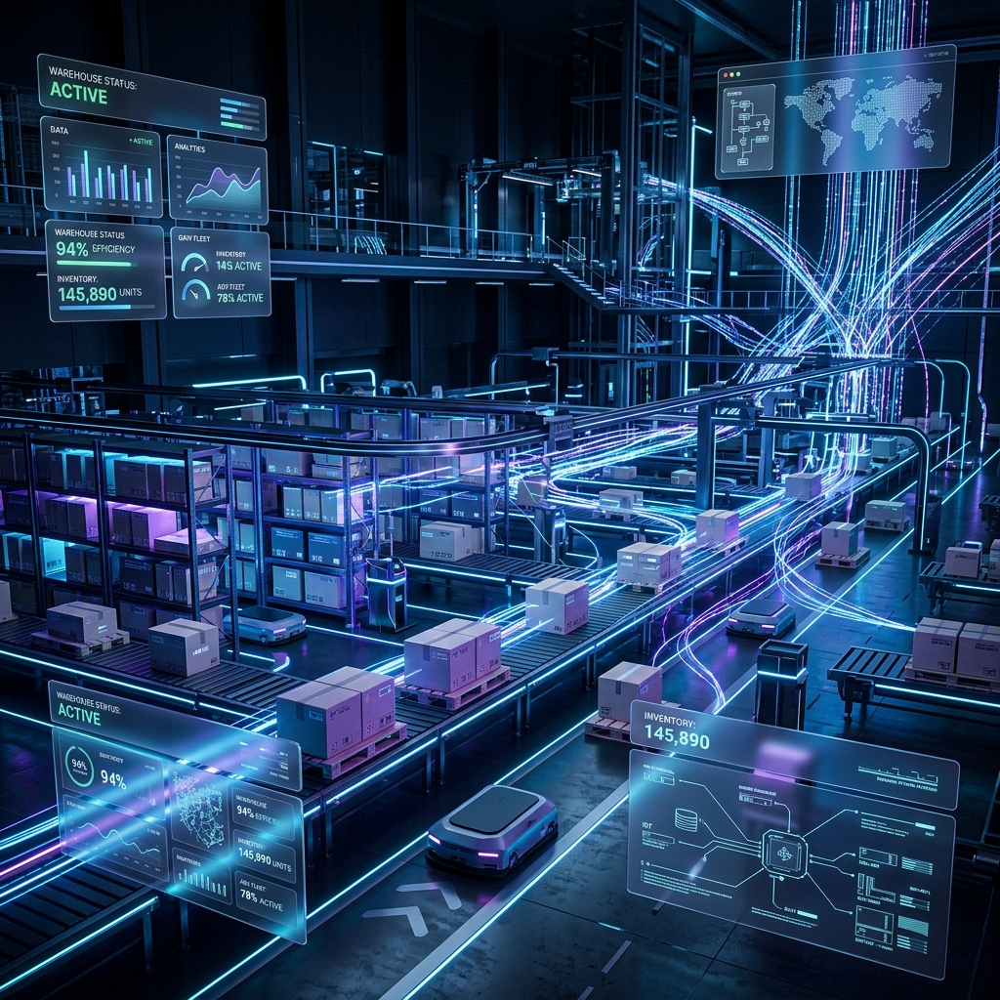
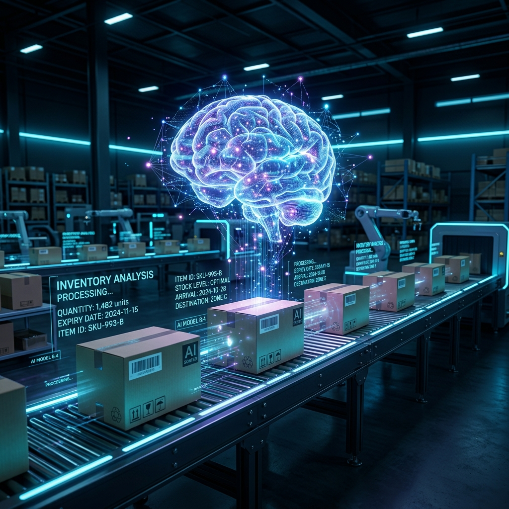
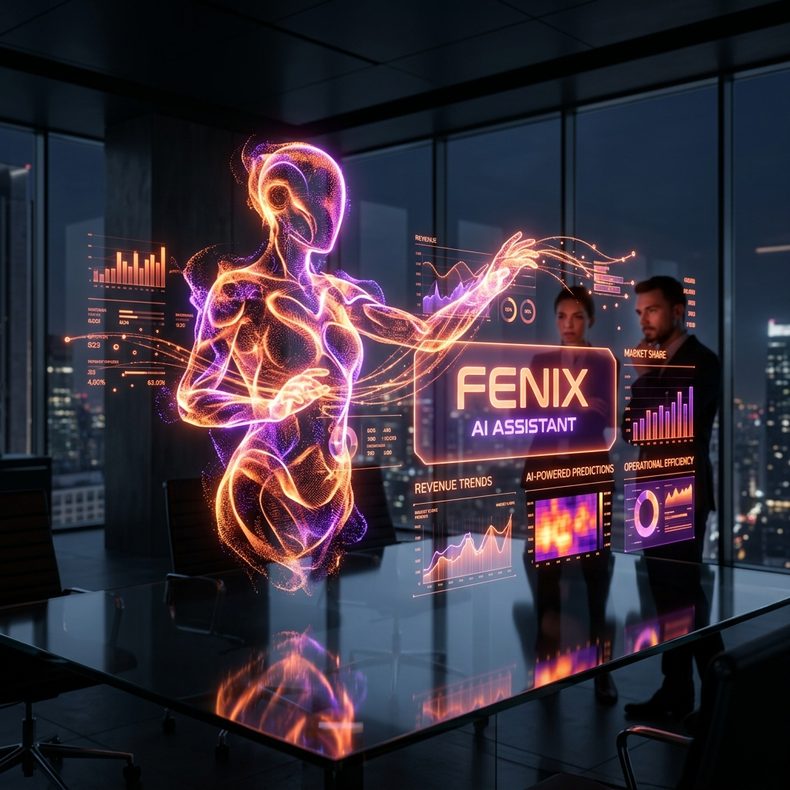
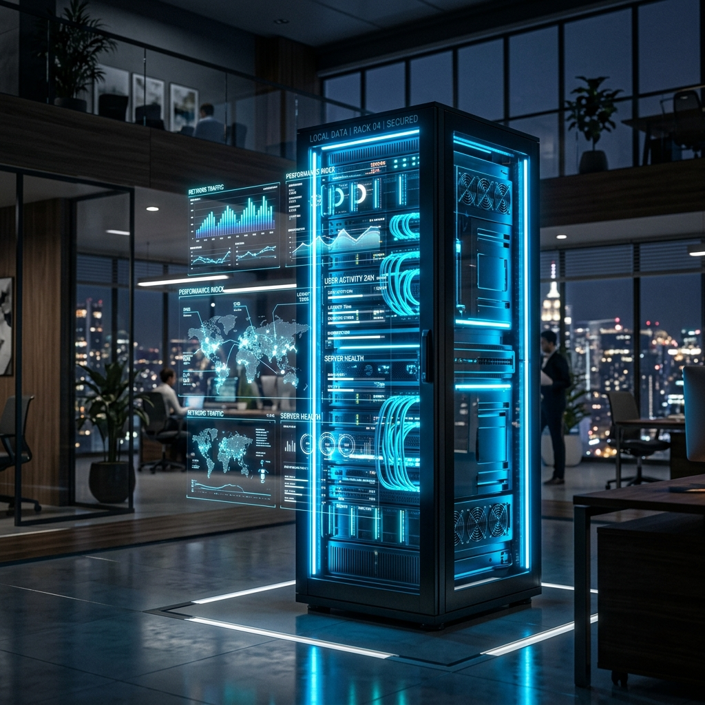
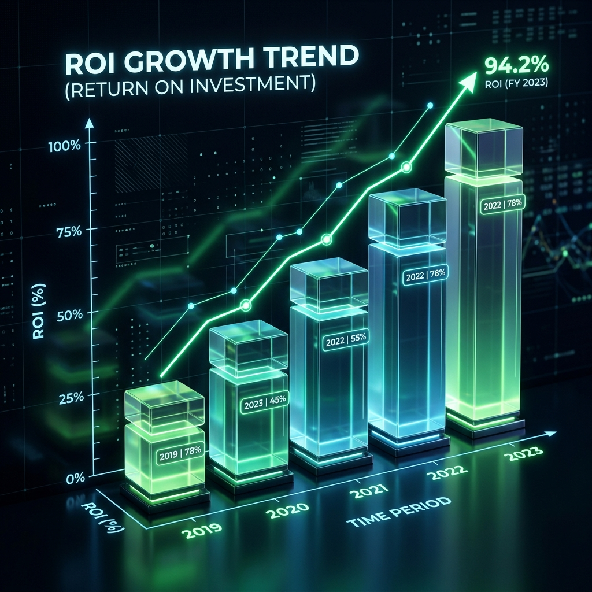

Pitch Gerencial Privado
Descubra cómo nuestro WMS Enterprise exclusivo no solo organiza cajas, sino que utiliza Inteligencia Artificial y analítica predictiva para transformar cada eslabón de la operación de Fénix en eficiencia absoluta.

Un ecosistema diseñado para cubrir todo el flujo de valor, eliminando el 100% del papeleo manual y la intuición operativa.
Gestión de Citas en Patio. Aprobación y verificación de muelle automática. Control ciego de contenedores vs Orden de Compra.
Módulo de Almacenamiento: El sistema indica pasillo y nivel óptimo considerando peso, familia del producto y rotación estadística.
Separación guiada en Móviles y Tablets. Consolidación de planillas multipedido y rutas optimizadas para erradicar recorridos en vacío.
Escaneo unitario de salida con bloqueos duros ante inconsistencias. Generación de actas digitales para garantizar despachos impecables.
La pérdida de cartera por lotes vencidos en bodega es el enemigo silencioso de toda gran compañía.
WMS Fénix incluye un motor de Inteligencia Artificial Predictivo que no solo aplica estricto control FEFO (First Expiry, First Out), sino que proyecta cuántos días tomará agotar un lote basado en el consumo histórico real de las zonas operadas por Fénix.

Más allá del cálculo métrico, el cerebro de su WMS está impulsado por FENIX, su Analista de Datos Corporativo virtual, operando e inspeccionando ininterrumpidamente su bodega.
A diferencia de leer reportes excel estáticos mensuales, FENIX escanea activamente toda la red y notifica anomalías al instante:

Montar una red propia (On-Premise) blinda a Fénix operativamente. Ustedes son los dueños absolutos de sus datos y de su velocidad (latencia cero), asegurando despachos incluso ante caídas de internet global.
Al ser propietarios del clúster de datos de forma local, pueden enchufar directamente múltiples plataformas de analítica masiva (PowerBI, Looker, etc) sin tener que rogarle a proveedores como Oracle o pagar cuotas extra en USD por cada API Call.
(Aprox. $7.5M COP Inversión Hardware Única) = Autosuficiencia.

Cualquier WMS genérico obligará a que Fénix frene sus dinámicas y se rinda a las reglas de una plantilla rígida. Con nuestra alianza es al revés: El WMS es desarrollado y moldeado para obedecer a las dinámicas atípicas y expansivas de Fénix, acoplándose al ADN corporativo de la empresa al cien por ciento.
Nuestra plataforma cuenta con la base estructural idónea para convertirse a largo plazo en el Gran ERP maestro. Podemos crear módulos satelitales customizados que eliminen la manualidad en departamentos como Tesorería, Mantenimiento de Flota, Compras o Gestión de Carteras. Construir un inmenso holding tecnológico bajo un solo techo, sin pagar cientos de licencias foráneas.
| Característica Crítica | WMS Genérico del Mercado (Enlatado) | WMS Fénix Exclusivo |
|---|---|---|
| Modelo Económico Licenciado | Suscripción castigadora por número de usuarios. Un pico de contrataciones eleva astronómicamente su recibo mensual. | Crecimiento Sin Limite Oculto. Puede crear 100 cuentas temporales navideñas sin pagar multas. |
| Evolución y Adaptación de Diseño | "El sistema es como es". Solicitar que le añadan un botón para su proceso toma meses y burocracia de foros inútiles. | Modificable a Petición. Módulos que absorben el carácter de su logística diseñándose exactamente bajo sus términos. |
| Motores de Inteligencia Artificial | Son inmensamente lejanos, y cobrarán Add-Ons muy agresivos solo por visualizar los análisis estandarizados sobre sus datos de servidor externo. | Algoritmo Predictivo Local Fénix Inyectado de serie. Explotando métricas predictivas FEFO gratis. |
| Mesa de Soporte SLA | Intervención en base a call-center general de niveles que desgastan el día para solucionar el bug de un empleado. | Intervención Quirúrgica In House. Contacto directo con su núcleo de TI y mitigaciones sobre la marcha urgente por desarrolladores. |
Implementar tecnología en Fénix no se contabiliza como gasto, es el mejor gerente operativo salvaguardando el patrimonio anual. La inversión local se pagará sola rápidamente extinguiendo dos barreras monumentales:
Las pérdidas incuantificables que causa una rotura térmica o fechas obviadas desaparecen permanentemente. Con la IA evitando solo unos pocos despachos erráticos y blindando las devoluciones de clientes, **el sistema se amortiza automáticamente**.
Crecer al doble históricamente implica duplicar analistas ciegos en la bodega. Nuestra tecnología hiper-digitaliza al operario promedio. Fénix absorbe picos decembrinos y expansiones territoriales sin contratar batallones insostenibles ni ahogar los actuales márgenes netos de rentabilidad.

La transformación industrial requiere dar el paso del excel análogo a los ecosistemas en órbita. Este WMS Enterprise le asegurará la erradicación humana del error, controlará hasta el último centavo del almacén y proyectará exponencialmente su capacidad.
Despilfarros en Devolución e Inversión Vacía
Coherencia Absoluta Matemática de Bodega.
Capacidad de Crecimiento de Multiples Sedes Sincronizadas